26 · Appendix · Measurements
Measured before it is made.
Every style has one measurement sheet for all its colourways, so every piece comes out the same, whoever orders it. Garments come in M, L and XL, sampled in L. The caps come in S, M and L, sampled in M; the socks in EU 39–42 and 43–46; the sunglasses in one size.
Finished measurements in centimetres, sunglasses in millimetres. A ½ measurement is taken flat across one side; HPS is the high point of the shoulder; ± is the tolerance. These are working specs, to be confirmed against the first samples.
Caps
Marram Cap
Six-panel cap with a soft, unstructured, low crown, a pre-curved visor and a brass slider.
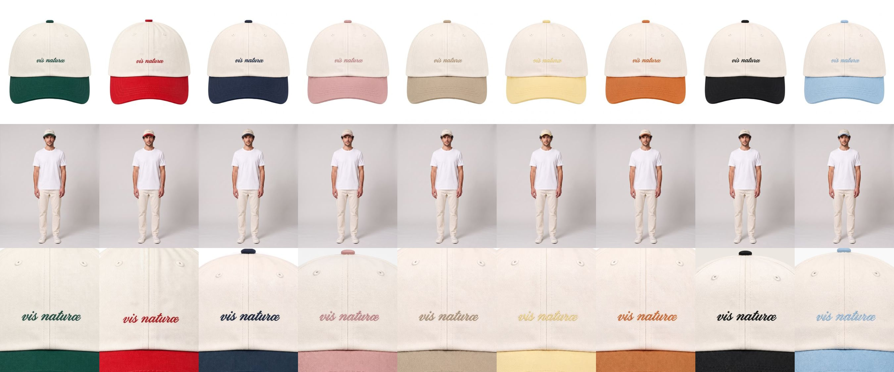
| Point, cm | S | M | L | ± |
|---|---|---|---|---|
| Head circumference, strap loosest | 57 | 59 | 61 | 0.5 |
| Strap adjustment | 4 | 4 | 4 | 0.5 |
| Front crown height, along centre front seam | 15.5 | 16 | 16.5 | 0.3 |
| Back crown height, opening to button | 10 | 10.5 | 11 | 0.3 |
| Back opening, height × width | 5.5 × 7 | 5.5 × 7 | 5.5 × 7 | 0.3 |
| Visor length at centre front | 7 | 7 | 7 | 0.3 |
| Visor width, tip to tip | 18 | 18.5 | 19 | 0.3 |
| Sweatband height | 2.5 | 2.5 | 2.5 | 0.2 |
- Fabric
- Organic cotton twill, garment-washed
- Embroidery
- "vis naturæ" in script, 7 cm wide, centred on the front seam, baseline 3 cm above the visor seam, in the visor colour
Sett Cap
The Marram block dyed one colour throughout, visor and top button included, with a small sleeping badger low on the front.
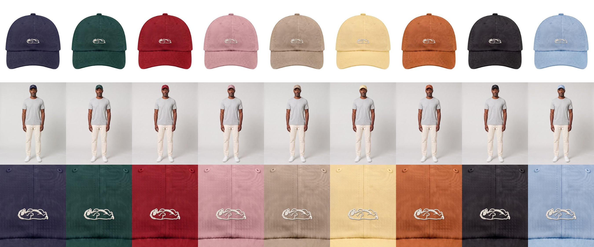
| Point, cm | S | M | L | ± |
|---|---|---|---|---|
| Head circumference, strap loosest | 57 | 59 | 61 | 0.5 |
| Strap adjustment | 4 | 4 | 4 | 0.5 |
| Front crown height, along centre front seam | 15.5 | 16 | 16.5 | 0.3 |
| Back crown height, opening to button | 10 | 10.5 | 11 | 0.3 |
| Back opening, height × width | 5.5 × 7 | 5.5 × 7 | 5.5 × 7 | 0.3 |
| Visor length at centre front | 7 | 7 | 7 | 0.3 |
| Visor width, tip to tip | 18 | 18.5 | 19 | 0.3 |
| Sweatband height | 2.5 | 2.5 | 2.5 | 0.2 |
- Fabric
- Organic cotton twill, garment-washed, dyed one colour throughout
- Visor
- Pre-curved, four rows of stitching, in the body colour
- Embroidery
- Badger asleep on its back, 5 cm wide, raised satin stitch in ecru, centred on the front seam, baseline 2.5 cm above the visor seam
Cabana Cap
The Marram block cut from the Cabana wide stripe, with a solid visor and top button in the stripe colour.
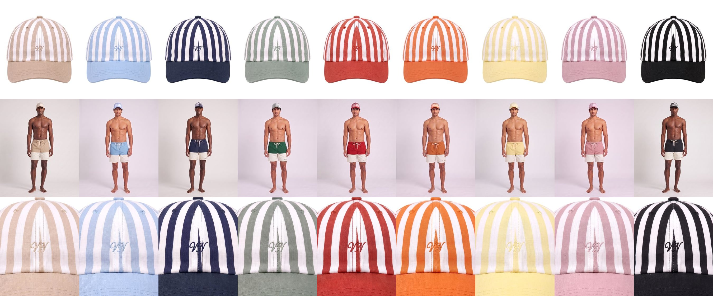
| Point, cm | S | M | L | ± |
|---|---|---|---|---|
| Head circumference, strap loosest | 57 | 59 | 61 | 0.5 |
| Strap adjustment | 4 | 4 | 4 | 0.5 |
| Front crown height, along centre front seam | 15.5 | 16 | 16.5 | 0.3 |
| Back crown height, opening to button | 10 | 10.5 | 11 | 0.3 |
| Back opening, height × width | 5.5 × 7 | 5.5 × 7 | 5.5 × 7 | 0.3 |
| Visor length at centre front | 7 | 7 | 7 | 0.3 |
| Visor width, tip to tip | 18 | 18.5 | 19 | 0.3 |
| Sweatband height | 2.5 | 2.5 | 2.5 | 0.2 |
- Fabric
- Linen and cotton twill, washed, yarn-dyed stripe
- Stripe
- Wide stripe, 2 cm colour and 2 cm white, running band to button on each panel and matched at the seams
- Visor
- Solid in the stripe colour, pre-curved, four rows of stitching
- Embroidery
- VN in script, 3.5 cm wide, centred on the front seam, baseline 3 cm above the visor seam, in the stripe colour
Swim
Tidal Swim Short
Mid-length swim short with an elasticated waist, braided drawcord with metal tips and a recycled mesh lining.
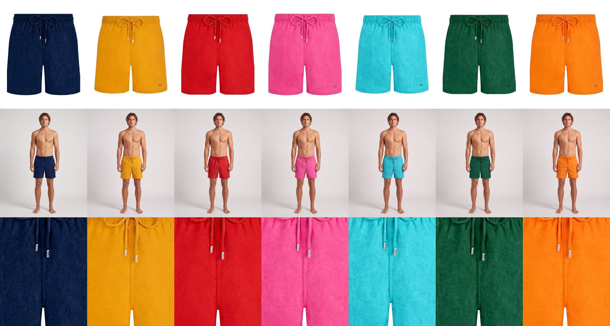
| Point, cm | M | L | XL | ± |
|---|---|---|---|---|
| ½ waist, relaxed | 39 | 42 | 45 | 1 |
| ½ waist, stretched | 52 | 55 | 58 | 1 |
| ½ hip, 18 cm below top of waistband | 56 | 59 | 62 | 1 |
| Front rise, incl. waistband | 27 | 28 | 29 | 0.5 |
| Back rise, incl. waistband | 37 | 38 | 39 | 0.5 |
| Inseam | 15 | 15 | 15 | 0.5 |
| Outseam, incl. waistband | 43 | 44 | 45 | 0.5 |
| ½ leg opening | 30 | 31.5 | 33 | 0.5 |
| Waistband height | 4 | 4 | 4 | 0.3 |
- Fabric
- Recycled polyamide from reclaimed fishing nets, quick-dry
- Lining
- Recycled mesh brief
- Pockets
- Two side seam pockets, 17 cm opening; one back pocket 14 × 15 cm with a drain eyelet
- Drawcord
- Braided, 130 cm, metal tips, exits through two eyelets 3 cm either side of centre front
- Embroidery
- VN monogram, 3 cm wide, left leg front, 3 cm above hem, 5 cm in from the side seam, tone on tone
- Label
- Size label sewn inside the waistband at centre back
Shore Swim Short
The Tidal cut split into two colours, with a contrast drawcord and the name in script at the hem.
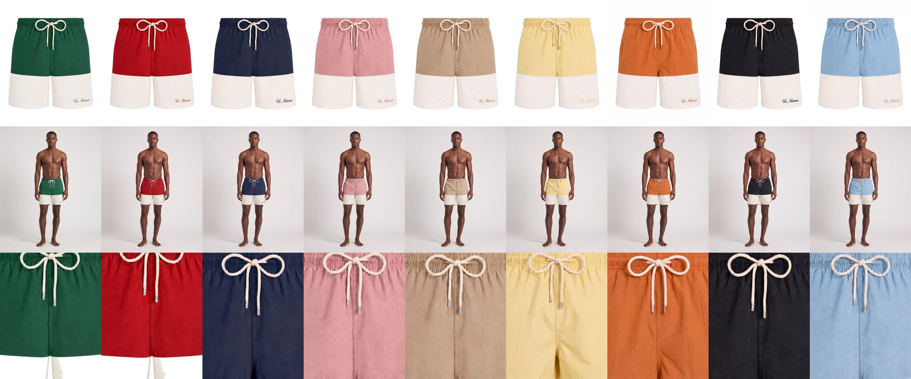
| Point, cm | M | L | XL | ± |
|---|---|---|---|---|
| ½ waist, relaxed | 39 | 42 | 45 | 1 |
| ½ waist, stretched | 52 | 55 | 58 | 1 |
| ½ hip, 18 cm below top of waistband | 56 | 59 | 62 | 1 |
| Front rise, incl. waistband | 27 | 28 | 29 | 0.5 |
| Back rise, incl. waistband | 37 | 38 | 39 | 0.5 |
| Inseam | 15 | 15 | 15 | 0.5 |
| Outseam, incl. waistband | 43 | 44 | 45 | 0.5 |
| ½ leg opening | 30 | 31.5 | 33 | 0.5 |
| Colour seam above hem, at outseam | 7 | 7 | 7 | 0.3 |
| Waistband height | 4 | 4 | 4 | 0.3 |
- Fabric
- Recycled polyamide from reclaimed fishing nets, quick-dry
- Panels
- Upper body in the first colour, lower leg band in the second; seam parallel to the hem
- Lining
- Recycled mesh brief
- Drawcord
- Braided, 130 cm, metal tips, in the contrast colour
- Embroidery
- "vis naturæ" in script, 6 cm wide, left leg lower band, centred 2.5 cm above hem, in the upper colour
- Label
- Size label sewn inside the waistband at centre back
Lido Stripe Swim Short
The Tidal cut in a deckchair stripe, with the drawcord in the stripe colour.
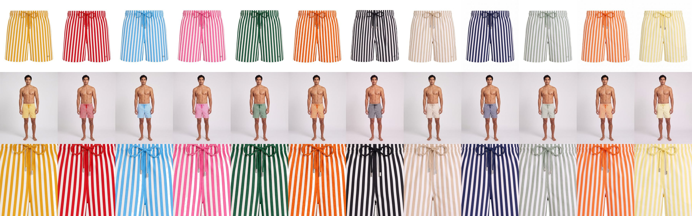
| Point, cm | M | L | XL | ± |
|---|---|---|---|---|
| ½ waist, relaxed | 39 | 42 | 45 | 1 |
| ½ waist, stretched | 52 | 55 | 58 | 1 |
| ½ hip, 18 cm below top of waistband | 56 | 59 | 62 | 1 |
| Front rise, incl. waistband | 27 | 28 | 29 | 0.5 |
| Back rise, incl. waistband | 37 | 38 | 39 | 0.5 |
| Inseam | 15 | 15 | 15 | 0.5 |
| Outseam, incl. waistband | 43 | 44 | 45 | 0.5 |
| ½ leg opening | 30 | 31.5 | 33 | 0.5 |
| Waistband height | 4 | 4 | 4 | 0.3 |
- Fabric
- Recycled polyamide from reclaimed fishing nets, printed deckchair stripe, vertical
- Stripe
- 3 cm stripes, colour and white, matched across the front and back rise and at the side seams
- Pockets
- Two side seam pockets, 17 cm opening; one back pocket 14 × 15 cm with a drain eyelet
- Drawcord
- Braided, 130 cm, metal tips, in the stripe colour
- Embroidery
- VN monogram, 3 cm wide, left leg front, 3 cm above hem, 5 cm in from the side seam
- Label
- Size label sewn inside the waistband at centre back
Shirts
Riviera Linen Shirt
Straight-collar shirt in thin washed linen, cut a touch long so it tucks or sits out.
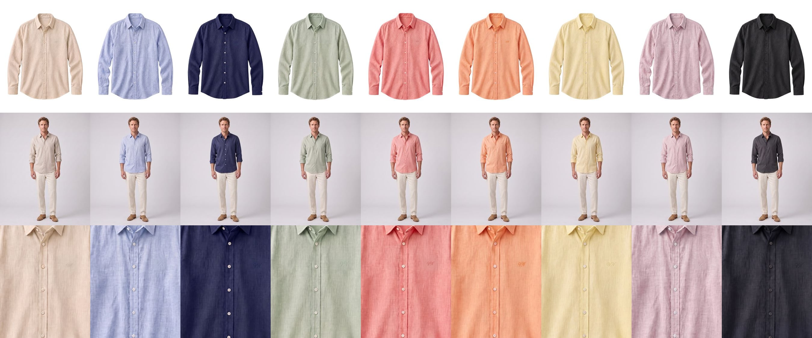
| Point, cm | M | L | XL | ± |
|---|---|---|---|---|
| Body length, HPS to hem at centre back | 76 | 78 | 80 | 1 |
| ½ chest, 2.5 cm below armhole | 57 | 60 | 63 | 1 |
| ½ hem, straight | 55 | 58 | 61 | 1 |
| Shoulder width, seam to seam | 47 | 49 | 51 | 0.5 |
| Sleeve length, shoulder seam to cuff edge | 64 | 65 | 66 | 0.5 |
| ½ bicep, 2.5 cm below armhole | 21 | 22 | 23 | 0.5 |
| ½ cuff, buttoned | 12 | 12.5 | 13 | 0.3 |
| Collar length, button to buttonhole | 41 | 43 | 45 | 0.5 |
| Collar point length | 7.5 | 7.5 | 7.5 | 0.3 |
| Collar band height at centre back | 3.5 | 3.5 | 3.5 | 0.2 |
- Fabric
- Lightweight linen, washed
- Buttons
- Corozo, 7 on the placket (incl. collar band), 1 per cuff, 1 spare
- Hem
- Curved, side gussets; side seam 8 cm shorter than centre back
- Embroidery
- VN in script, 3.5 cm wide, left chest, 20 cm below HPS, centred 10 cm from centre front, tone on tone
- Label
- Size label sewn inside the placket
Cabana Linen Shirt
The Riviera block woven in a wide cabana stripe, colour and white in equal measure.
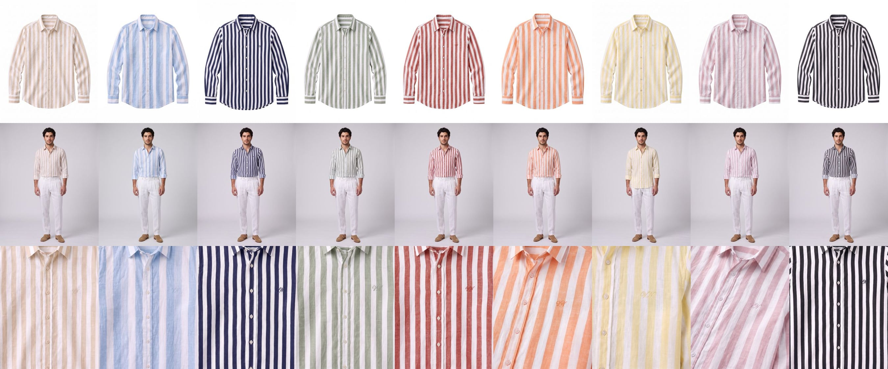
| Point, cm | M | L | XL | ± |
|---|---|---|---|---|
| Body length, HPS to hem at centre back | 76 | 78 | 80 | 1 |
| ½ chest, 2.5 cm below armhole | 57 | 60 | 63 | 1 |
| ½ hem, straight | 55 | 58 | 61 | 1 |
| Shoulder width, seam to seam | 47 | 49 | 51 | 0.5 |
| Sleeve length, shoulder seam to cuff edge | 64 | 65 | 66 | 0.5 |
| ½ bicep, 2.5 cm below armhole | 21 | 22 | 23 | 0.5 |
| ½ cuff, buttoned | 12 | 12.5 | 13 | 0.3 |
| Collar length, button to buttonhole | 41 | 43 | 45 | 0.5 |
| Collar point length | 7.5 | 7.5 | 7.5 | 0.3 |
| Collar band height at centre back | 3.5 | 3.5 | 3.5 | 0.2 |
- Fabric
- Lightweight linen, washed, yarn-dyed stripe
- Stripe
- Wide vertical stripe, 2 cm colour and 2 cm white; matched at the placket, pockets and side seams
- Buttons
- Corozo, 7 on the placket (incl. collar band), 1 per cuff, 1 spare
- Hem
- Curved, side gussets; side seam 8 cm shorter than centre back
- Embroidery
- VN in script, 3.5 cm wide, left chest, 20 cm below HPS, centred 10 cm from centre front, in the stripe colour
- Label
- Size label sewn inside the placket
Corniche Linen Shirt
The Riviera block in a heavier, textured linen and cotton weave.
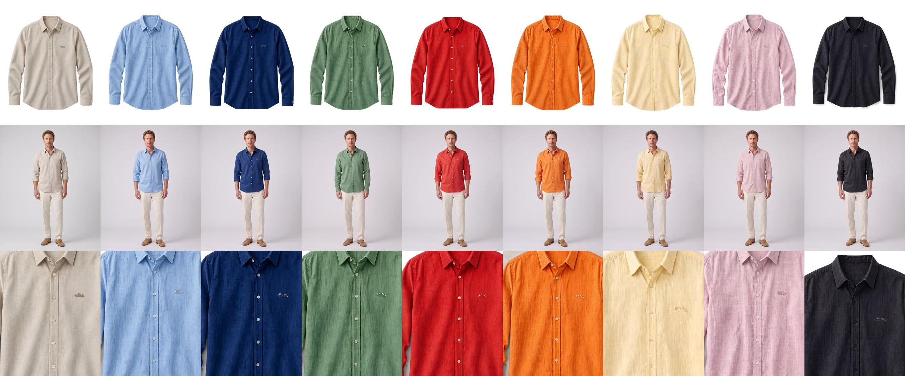
| Point, cm | M | L | XL | ± |
|---|---|---|---|---|
| Body length, HPS to hem at centre back | 76 | 78 | 80 | 1 |
| ½ chest, 2.5 cm below armhole | 57 | 60 | 63 | 1 |
| ½ hem, straight | 55 | 58 | 61 | 1 |
| Shoulder width, seam to seam | 47 | 49 | 51 | 0.5 |
| Sleeve length, shoulder seam to cuff edge | 64 | 65 | 66 | 0.5 |
| ½ bicep, 2.5 cm below armhole | 21 | 22 | 23 | 0.5 |
| ½ cuff, buttoned | 12 | 12.5 | 13 | 0.3 |
| Collar length, button to buttonhole | 41 | 43 | 45 | 0.5 |
| Collar point length | 7.5 | 7.5 | 7.5 | 0.3 |
| Collar band height at centre back | 3.5 | 3.5 | 3.5 | 0.2 |
- Fabric
- Linen and organic cotton 60/40, yarn-dyed, textured weave
- Buttons
- Corozo, 7 on the placket (incl. collar band), 1 per cuff, 1 spare
- Hem
- Curved, side gussets; side seam 8 cm shorter than centre back
- Embroidery
- Badger, 3.5 cm tall, left chest, 20 cm below HPS, centred 10 cm from centre front, thread one shade off the cloth
- Label
- Size label sewn inside the placket
Trousers
Veranda Linen Trouser
Relaxed drawstring trouser in washed slub linen, wide through the leg with a turned-up hem.
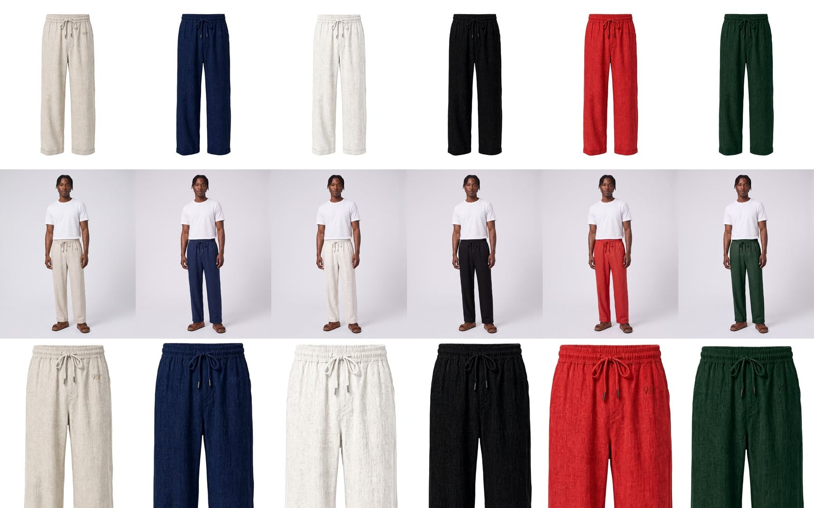
| Point, cm | M | L | XL | ± |
|---|---|---|---|---|
| ½ waist, relaxed | 39 | 42 | 45 | 1 |
| ½ waist, stretched | 52 | 55 | 58 | 1 |
| ½ hip, 20 cm below top of waistband | 56 | 59 | 62 | 1 |
| Front rise, incl. waistband | 30 | 31 | 32 | 0.5 |
| Back rise, incl. waistband | 40 | 41 | 42 | 0.5 |
| Inseam, finished | 78 | 79 | 80 | 1 |
| ½ thigh, 2.5 cm below crotch | 34 | 35.5 | 37 | 0.5 |
| ½ knee, 35 cm below crotch | 28 | 29 | 30 | 0.5 |
| ½ leg opening | 25 | 26 | 27 | 0.5 |
| Turn-up height | 4 | 4 | 4 | 0.3 |
| Waistband height | 4 | 4 | 4 | 0.3 |
- Fabric
- Washed linen, slubbed weave
- Waist
- Fully elasticated with an inner drawcord, metal tips
- Pockets
- Two side seam pockets, 17 cm opening
- Embroidery
- VN monogram, 3 cm wide, left front at the hip, 8 cm below waistband, 6 cm in from the side seam, tone on tone
- Label
- Size label sewn inside the waistband at centre back
Esplanade Linen Trouser
Tailored straight-leg trouser in linen and cotton herringbone with a pressed crease. M, L and XL correspond to waist 32, 34 and 36.
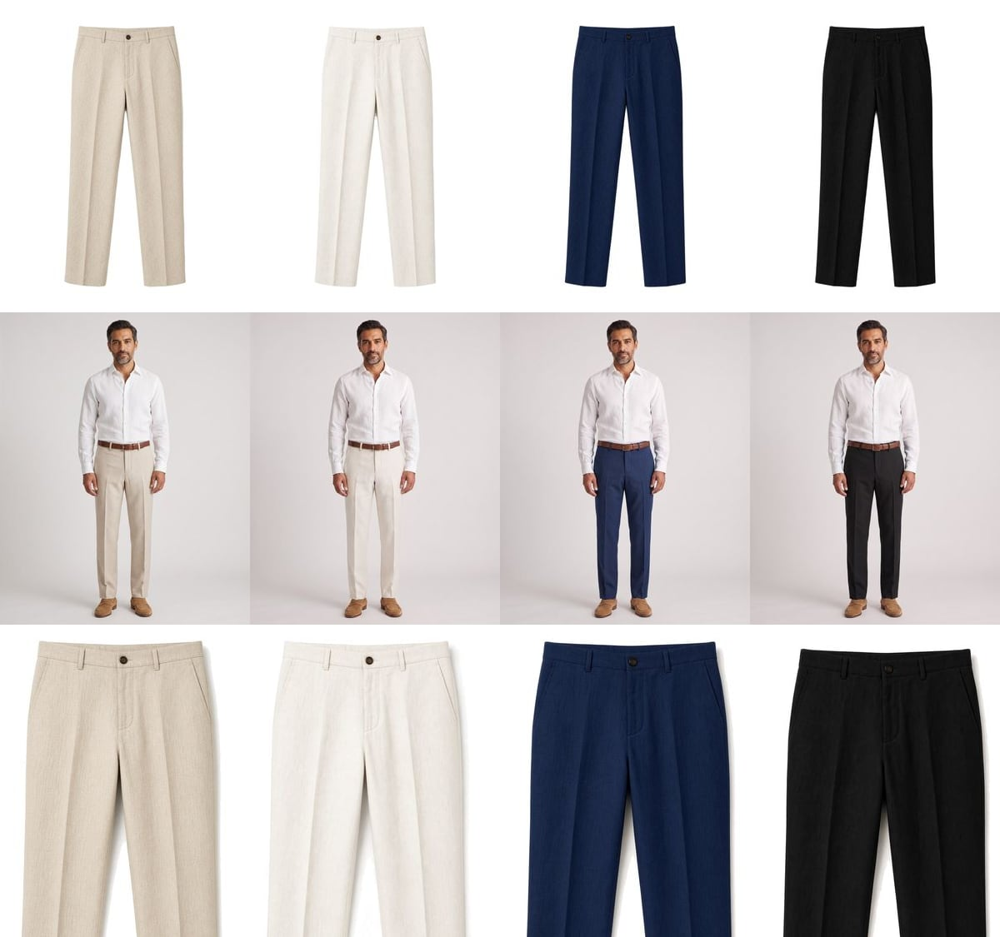
| Point, cm | M | L | XL | ± |
|---|---|---|---|---|
| ½ waist, buttoned | 42 | 44.5 | 47 | 1 |
| ½ hip, 18 cm below top of waistband | 52 | 54.5 | 57 | 1 |
| Front rise, incl. waistband | 27 | 27.5 | 28 | 0.5 |
| Back rise, incl. waistband | 38 | 39 | 40 | 0.5 |
| Inseam, finished | 82 | 82 | 82 | 1 |
| ½ thigh, 2.5 cm below crotch | 31 | 32.5 | 34 | 0.5 |
| ½ knee, 35 cm below crotch | 23 | 24 | 25 | 0.5 |
| ½ leg opening | 20 | 21 | 22 | 0.5 |
| Waistband height | 4 | 4 | 4 | 0.3 |
- Fabric
- Linen and cotton herringbone, garment-washed
- Front
- Flat front, pressed crease front and back
- Fly
- Zip fly, horn button at the waistband
- Pockets
- Slant side pockets, 17 cm opening; two jetted back pockets, 13 cm
- Belt loops
- Seven, 1 cm wide, 5 cm long
- Label
- Size label sewn inside the waistband at centre back
Quayside Chino
Slim, straight chino in garment-dyed stretch cotton twill with an extended tab waist. M, L and XL correspond to waist 32, 34 and 36.
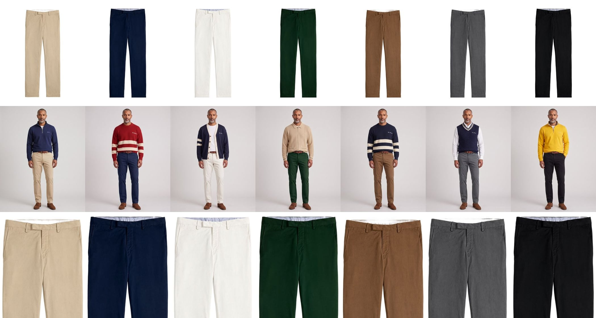
| Point, cm | M | L | XL | ± |
|---|---|---|---|---|
| ½ waist, buttoned | 42 | 44.5 | 47 | 1 |
| ½ hip, 18 cm below top of waistband | 50.5 | 53 | 55.5 | 1 |
| Front rise, incl. waistband | 26 | 26.5 | 27 | 0.5 |
| Back rise, incl. waistband | 37 | 38 | 39 | 0.5 |
| Inseam, finished | 82 | 82 | 82 | 1 |
| ½ thigh, 2.5 cm below crotch | 29.5 | 31 | 32.5 | 0.5 |
| ½ knee, 35 cm below crotch | 21.5 | 22.5 | 23.5 | 0.5 |
| ½ leg opening | 18 | 19 | 20 | 0.5 |
| Waistband height | 4 | 4 | 4 | 0.3 |
| Tab extension past centre front | 6 | 6 | 6 | 0.3 |
- Fabric
- Cotton twill with 2% elastane, garment-dyed
- Front
- Flat front, no pleats
- Fly
- Zip fly, button on the tab
- Pockets
- Slant side pockets, 17 cm opening; two jetted back pockets, 13 cm
- Belt loops
- Seven, 1 cm wide, 5 cm long
- Label
- Size label sewn inside the waistband at centre back
Knitwear
Harbour Quarter Zip
Heavyweight quarter-zip in brushed loopback cotton, relaxed fit with a dropped shoulder.
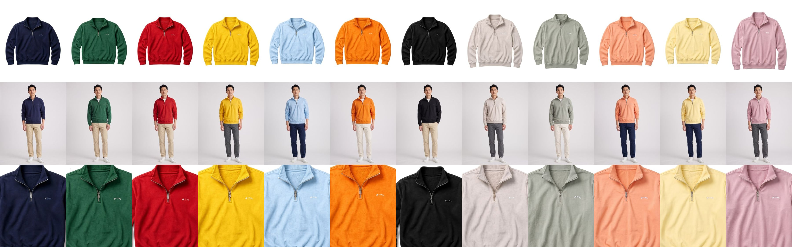
| Point, cm | M | L | XL | ± |
|---|---|---|---|---|
| Body length, HPS to hem at centre back | 70 | 72 | 74 | 1 |
| ½ chest, 2.5 cm below armhole | 60 | 63 | 66 | 1 |
| ½ hem, rib relaxed | 50 | 53 | 56 | 1 |
| Shoulder width, seam to seam | 56 | 58 | 60 | 1 |
| Sleeve length, shoulder seam to cuff edge | 60 | 61 | 62 | 1 |
| ½ bicep, 2.5 cm below armhole | 24 | 25 | 26 | 0.5 |
| ½ cuff, relaxed | 9.5 | 10 | 10.5 | 0.5 |
| Stand collar height | 6 | 6 | 6 | 0.3 |
| Zip length | 20 | 20 | 20 | 0.5 |
| Hem and cuff rib height | 7 | 7 | 7 | 0.3 |
- Fabric
- Organic cotton loopback, 420 gsm, brushed inside
- Zip
- Metal, quarter length, leather pull
- Embroidery
- Badger, 4 cm tall, left chest, 20 cm below HPS, centred 10 cm from centre front
- Label
- Size label sewn inside the collar
Mooring Stripe Crew
Chunky crew-neck jumper with contrast bands knitted in across the body and sleeves.
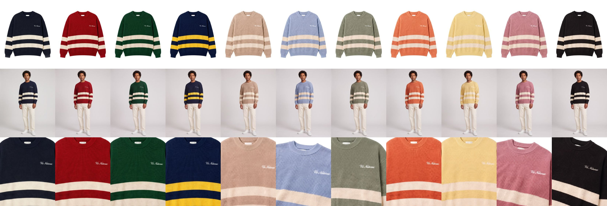
| Point, cm | M | L | XL | ± |
|---|---|---|---|---|
| Body length, HPS to hem at centre back | 68 | 70 | 72 | 1 |
| ½ chest, 2.5 cm below armhole | 59 | 62 | 65 | 1.5 |
| ½ hem, rib relaxed | 49 | 52 | 55 | 1.5 |
| Shoulder width, seam to seam | 56 | 58 | 60 | 1 |
| Sleeve length, shoulder seam to cuff edge | 59 | 60 | 61 | 1 |
| ½ bicep, 2.5 cm below armhole | 24 | 25 | 26 | 1 |
| ½ cuff, relaxed | 10 | 10.5 | 11 | 0.5 |
| Neck width, seam to seam | 20 | 20.5 | 21 | 0.5 |
| Front neck drop | 9 | 9 | 9 | 0.5 |
| Hem and cuff rib height | 7 | 7 | 7 | 0.3 |
- Knit
- Organic cotton, 5 gauge
- Stripes
- Two intarsia bands, 7 cm each with 6 cm between; lower band 10 cm above the hem rib; sleeve bands line up with the body
- Collar
- Rib, 3 cm
- Embroidery
- "vis naturæ" in script, 7 cm wide, left chest, 18 cm below HPS, centred 10 cm from centre front
- Label
- Size label sewn inside the collar
Regatta Cardigan
Varsity cardigan in a soft, heavy knit with a contrast placket and two bars on the left sleeve.
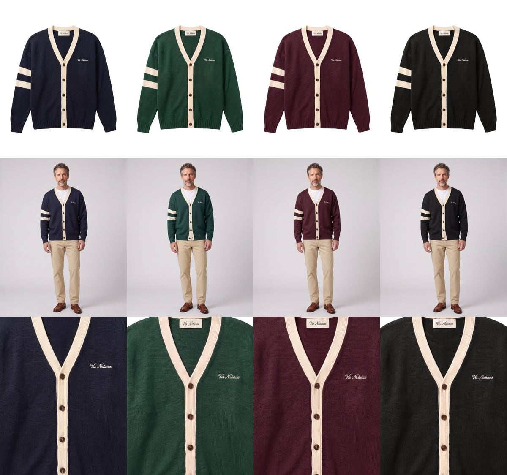
| Point, cm | M | L | XL | ± |
|---|---|---|---|---|
| Body length, HPS to hem at centre back | 68 | 70 | 72 | 1 |
| ½ chest, 2.5 cm below armhole | 58 | 61 | 64 | 1.5 |
| ½ hem, rib relaxed | 50 | 53 | 56 | 1.5 |
| Shoulder width, seam to seam | 54 | 56 | 58 | 1 |
| Sleeve length, shoulder seam to cuff edge | 62 | 63 | 64 | 1 |
| ½ bicep, 2.5 cm below armhole | 22 | 23 | 24 | 1 |
| ½ cuff, relaxed | 10 | 10.5 | 11 | 0.5 |
| V-neck depth, HPS to top button | 30 | 31 | 32 | 0.5 |
| Placket width | 3.5 | 3.5 | 3.5 | 0.2 |
| Hem and cuff rib height | 6 | 6 | 6 | 0.3 |
- Knit
- Cotton and merino blend, 7 gauge
- Buttons
- Horn, 2 cm, five on the placket
- Sleeve bars
- Two contrast bars on the left sleeve, 2 cm each, 1.5 cm apart, starting 15 cm below the shoulder seam
- Embroidery
- "vis naturæ" in script, 7 cm wide, left chest, 20 cm below HPS, centred 10 cm from centre front
- Label
- Size label sewn inside the placket
Pavilion Cable Vest
Cricket vest in a deep cable knit with a striped V-neck.
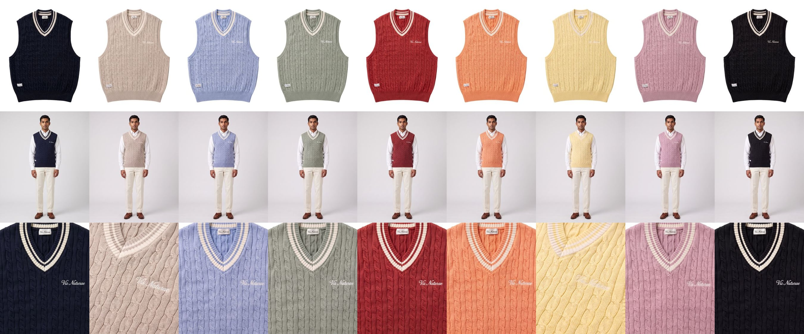
| Point, cm | M | L | XL | ± |
|---|---|---|---|---|
| Body length, HPS to hem at centre back | 66 | 68 | 70 | 1 |
| ½ chest, 2.5 cm below armhole | 55 | 58 | 61 | 1.5 |
| ½ hem, rib relaxed | 49 | 52 | 55 | 1.5 |
| Shoulder width, seam to seam | 36 | 37 | 38 | 0.5 |
| Armhole depth, straight | 25 | 26 | 27 | 0.5 |
| Neck width, seam to seam | 20 | 21 | 22 | 0.5 |
| V-neck depth, HPS to point | 26 | 27 | 28 | 0.5 |
| V-neck trim width | 3 | 3 | 3 | 0.2 |
| Armhole rib width | 2.5 | 2.5 | 2.5 | 0.2 |
| Hem rib height | 6 | 6 | 6 | 0.3 |
- Knit
- Organic cotton cable knit
- V-neck trim
- Rib with two stripes, 0.5 cm each
- Embroidery
- "vis naturæ" in script, 7 cm wide, left chest, 20 cm below HPS, centred 10 cm from centre front
- Labels
- Woven label at the left hem; size label sewn inside the neck
Clubhouse Knit Jacket
Zip-through knitted jacket with a polo collar, tipped patch pockets and a contrast placket.
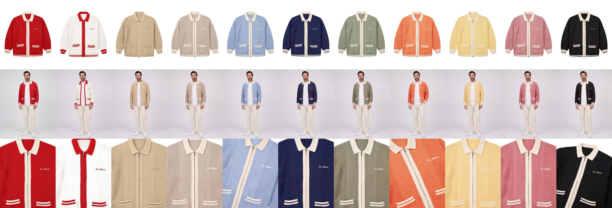
| Point, cm | M | L | XL | ± |
|---|---|---|---|---|
| Body length, HPS to hem at centre back | 68 | 70 | 72 | 1 |
| ½ chest, 2.5 cm below armhole | 60 | 63 | 66 | 1.5 |
| ½ hem, rib relaxed | 52 | 55 | 58 | 1.5 |
| Shoulder width, seam to seam | 50 | 52 | 54 | 1 |
| Sleeve length, shoulder seam to cuff edge | 63 | 64 | 65 | 1 |
| ½ bicep, 2.5 cm below armhole | 23 | 24 | 25 | 1 |
| ½ cuff, relaxed | 10.5 | 11 | 11.5 | 0.5 |
| Collar point length | 8 | 8 | 8 | 0.3 |
| Patch pocket, width × height | 15 × 16 | 15 × 16 | 16 × 17 | 0.5 |
| Pocket top below HPS | 42 | 43 | 44 | 0.5 |
| Hem and cuff rib height | 6 | 6 | 6 | 0.3 |
- Knit
- Cotton and wool blend, cable and rib
- Zip
- Two-way metal, full length
- Trims
- Polo collar and placket in the contrast colour; pocket tops tipped 1 cm in the contrast colour
- Embroidery
- "vis naturæ" in script, 7 cm wide, left chest, 20 cm below HPS, centred 10 cm from centre front
- Label
- Size label sewn inside the collar
Ridge Knit Gilet
Quilted knitted gilet with a high stand collar and a two-way zip.

| Point, cm | M | L | XL | ± |
|---|---|---|---|---|
| Body length, HPS to hem at centre back | 68 | 70 | 72 | 1 |
| ½ chest, 2.5 cm below armhole | 56 | 59 | 62 | 1 |
| ½ hem | 54 | 57 | 60 | 1 |
| Shoulder width, seam to seam | 42 | 43 | 44 | 0.5 |
| Armhole depth, straight | 27 | 28 | 29 | 0.5 |
| Stand collar height | 8 | 8 | 8 | 0.3 |
| Armhole rib width | 2 | 2 | 2 | 0.2 |
- Fabric
- Wool blend knit outer, quilted, recycled fill
- Zip
- Two-way metal, full length to the top of the collar
- Embroidery
- Badger, 4 cm tall, left chest, 20 cm below HPS, centred 10 cm from centre front, white
- Label
- Size label sewn inside the collar
Hoodies
Cabana Hoodie
Relaxed pullover hoodie in linen and cotton loopback, knitted in the Cabana wide stripe, with a dropped shoulder.

| Point, cm | M | L | XL | ± |
|---|---|---|---|---|
| Body length, HPS to hem at centre back | 70 | 72 | 74 | 1 |
| ½ chest, 2.5 cm below armhole | 61 | 64 | 67 | 1 |
| ½ hem, rib relaxed | 51 | 54 | 57 | 1 |
| Shoulder width, seam to seam | 56 | 58 | 60 | 1 |
| Sleeve length, shoulder seam to cuff edge | 60 | 61 | 62 | 1 |
| ½ bicep, 2.5 cm below armhole | 24 | 25 | 26 | 0.5 |
| ½ cuff, rib relaxed | 9.5 | 10 | 10.5 | 0.5 |
| Hood height, HPS to top of hood | 35 | 36 | 37 | 0.5 |
| Hood width, flat at widest | 25 | 25.5 | 26 | 0.5 |
| Pocket width at top × height | 29 × 18 | 30 × 19 | 31 × 20 | 0.5 |
| Hem and cuff rib height | 7 | 7 | 7 | 0.3 |
- Fabric
- Linen and cotton loopback terry, 380 gsm, yarn-dyed stripe
- Stripe
- Wide vertical stripe, 2 cm colour and 2 cm white, matched across the pocket, the hood centre seam and the side seams
- Rib
- Cuffs and hem in the solid stripe colour, 2×2 rib
- Drawcords
- Flat white cotton, 1.2 cm wide, 140 cm long
- Embroidery
- VN in script, 3.5 cm wide, left chest, 20 cm below HPS, centred 10 cm from centre front, in the stripe colour
- Label
- Size label sewn inside the hood
Riviera Hoodie
The same relaxed pullover hoodie, piece-dyed one colour throughout, ribbing and drawcords included.

| Point, cm | M | L | XL | ± |
|---|---|---|---|---|
| Body length, HPS to hem at centre back | 70 | 72 | 74 | 1 |
| ½ chest, 2.5 cm below armhole | 61 | 64 | 67 | 1 |
| ½ hem, rib relaxed | 51 | 54 | 57 | 1 |
| Shoulder width, seam to seam | 56 | 58 | 60 | 1 |
| Sleeve length, shoulder seam to cuff edge | 60 | 61 | 62 | 1 |
| ½ bicep, 2.5 cm below armhole | 24 | 25 | 26 | 0.5 |
| ½ cuff, rib relaxed | 9.5 | 10 | 10.5 | 0.5 |
| Hood height, HPS to top of hood | 35 | 36 | 37 | 0.5 |
| Hood width, flat at widest | 25 | 25.5 | 26 | 0.5 |
| Pocket width at top × height | 29 × 18 | 30 × 19 | 31 × 20 | 0.5 |
| Hem and cuff rib height | 7 | 7 | 7 | 0.3 |
- Fabric
- Linen and cotton loopback terry, 380 gsm, piece-dyed
- Colour
- Body, rib and drawcords dyed together, one shade throughout
- Rib
- Cuffs and hem, 2×2 rib
- Drawcords
- Flat cotton, 1.2 cm wide, 140 cm long, in the body colour
- Embroidery
- Badger, 4 cm wide, left chest, 20 cm below HPS, centred 10 cm from centre front, tone on tone
- Label
- Size label sewn inside the hood
Rugby shirts
Breakwater Rugby Shirt
Classic hooped rugby shirt in heavy cotton jersey with a woven twill collar.
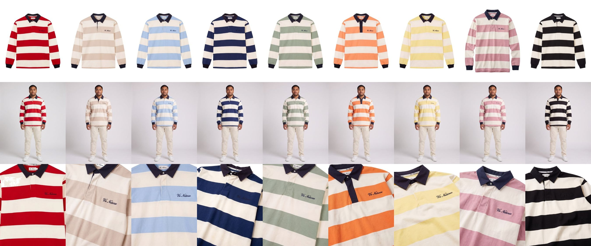
| Point, cm | M | L | XL | ± |
|---|---|---|---|---|
| Body length, HPS to hem at centre back | 74 | 76 | 78 | 1 |
| ½ chest, 2.5 cm below armhole | 58 | 61 | 64 | 1 |
| ½ hem | 56 | 59 | 62 | 1 |
| Shoulder width, seam to seam | 52 | 54 | 56 | 1 |
| Sleeve length, shoulder seam to cuff edge | 63 | 64 | 65 | 1 |
| ½ bicep, 2.5 cm below armhole | 23 | 24 | 25 | 0.5 |
| ½ cuff, rib relaxed | 10 | 10.5 | 11 | 0.5 |
| Collar point length | 8 | 8 | 8 | 0.3 |
| Placket length × width | 14 × 3.5 | 14 × 3.5 | 14 × 3.5 | 0.3 |
| Cuff rib height | 8 | 8 | 8 | 0.3 |
- Fabric
- Cotton jersey, 400 gsm
- Hoops
- 11 cm hoops, red and ecru, matched at the side seams and across the sleeves
- Collar and cuffs
- Woven twill collar and rib cuffs in navy
- Buttons
- Rubber, two on the placket
- Embroidery
- "vis naturæ" in script, 7 cm wide, left chest, 20 cm below HPS, centred 10 cm from centre front
- Label
- Size label sewn inside the collar
Touchline Rugby Shirt
Colour-block rugby shirt: navy base, white chest, red panels and sleeves.
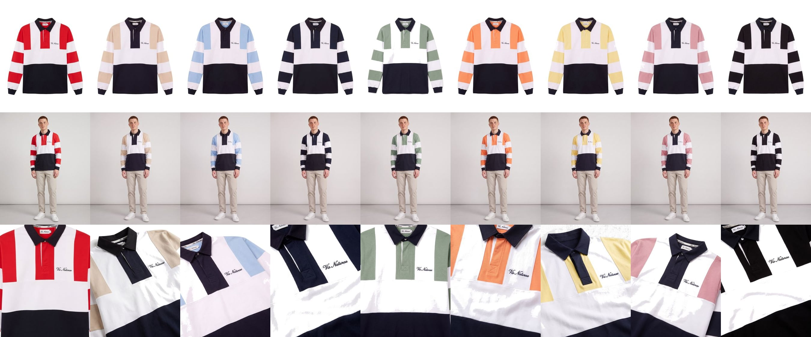
| Point, cm | M | L | XL | ± |
|---|---|---|---|---|
| Body length, HPS to hem at centre back | 74 | 76 | 78 | 1 |
| ½ chest, 2.5 cm below armhole | 58 | 61 | 64 | 1 |
| ½ hem | 56 | 59 | 62 | 1 |
| Shoulder width, seam to seam | 52 | 54 | 56 | 1 |
| Sleeve length, shoulder seam to cuff edge | 63 | 64 | 65 | 1 |
| ½ bicep, 2.5 cm below armhole | 23 | 24 | 25 | 0.5 |
| ½ cuff, rib relaxed | 10 | 10.5 | 11 | 0.5 |
| Collar point length | 8 | 8 | 8 | 0.3 |
| Placket length × width | 14 × 3.5 | 14 × 3.5 | 14 × 3.5 | 0.3 |
| White chest panel, HPS to lower seam | 30 | 31 | 32 | 0.5 |
| Cuff rib height | 8 | 8 | 8 | 0.3 |
- Fabric
- Cotton jersey, 400 gsm
- Panels
- Navy body, white chest panel, red side panels and sleeves; sewn, not printed
- Collar
- Woven twill
- Buttons
- Rubber, two on the placket
- Embroidery
- "vis naturæ" in script, 7 cm wide, left chest on the white panel, 20 cm below HPS, centred 10 cm from centre front
- Label
- Size label sewn inside the collar
Socks
Burrow Sock
Ribbed crew sock in combed cotton with a cushioned foot.
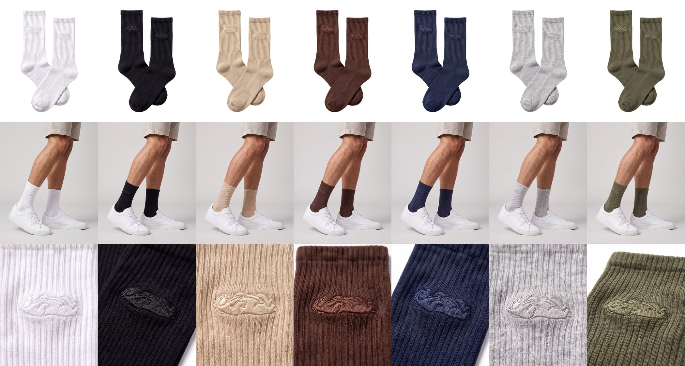
| Point, cm | EU 39–42 | EU 43–46 | ± |
|---|---|---|---|
| Foot length, heel to toe, flat | 23 | 25.5 | 0.5 |
| Leg length, top of cuff to top of heel | 18 | 19 | 0.5 |
| ½ foot width, relaxed | 8.5 | 9 | 0.3 |
| ½ leg width, relaxed | 8.5 | 9 | 0.3 |
| ½ cuff width, relaxed | 8 | 8.5 | 0.3 |
| Cuff rib height | 4 | 4 | 0.2 |
- Knit
- 100% combed cotton, 168 needle, rib leg and cuff
- Sole
- Terry-cushioned, heel to toe
- Toe
- Hand-linked, no ridge
- Embroidery
- Badger, 2 cm wide, outer ankle, 3 cm above the heel line, tone on tone
- Label
- Size printed on the paper band that holds the pair
Sunglasses
Alizé Sunglasses
Slim, narrow oval in hand-polished acetate with a metal core in each arm.

| Point, mm | One size | ± |
|---|---|---|
| Lens width | 50 | 0.5 |
| Lens height | 36 | 0.5 |
| Bridge | 20 | 0.5 |
| Temple length | 145 | 1 |
| Total frame width | 138 | 1 |
| Front thickness | 5 | 0.3 |
- Frame
- Hand-polished cellulose acetate; metal core the length of each arm
- Lenses
- Polarised grey, UV400, category 3
- Hinges
- Multi-barrel metal; three pins at each front corner
- Label
- Frame size (50□20 145) printed inside the left arm